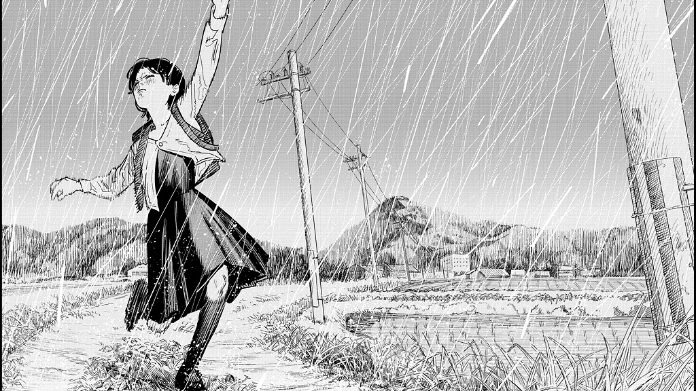
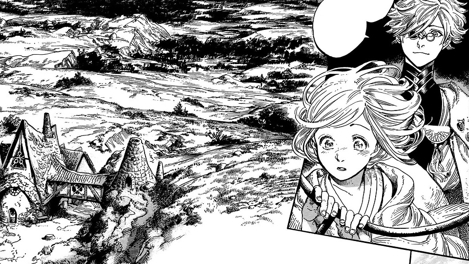
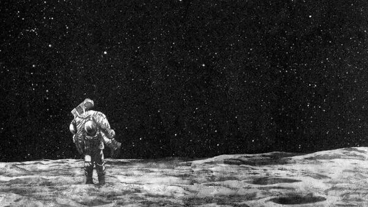
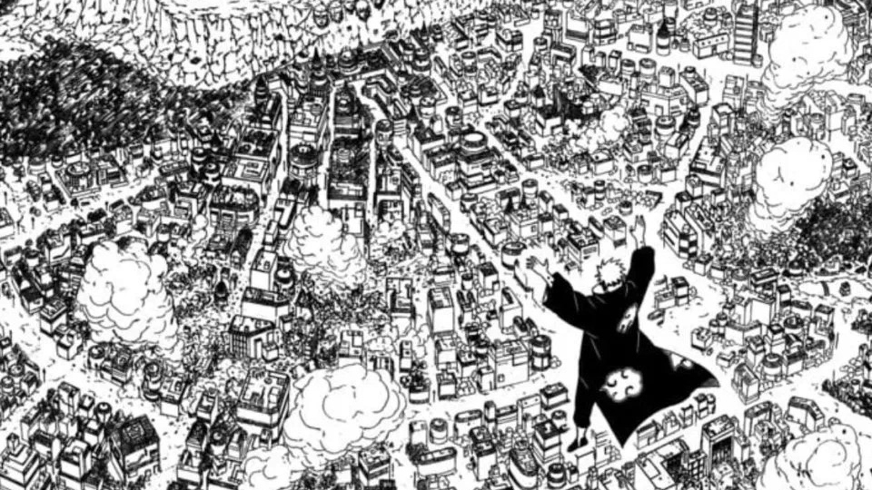
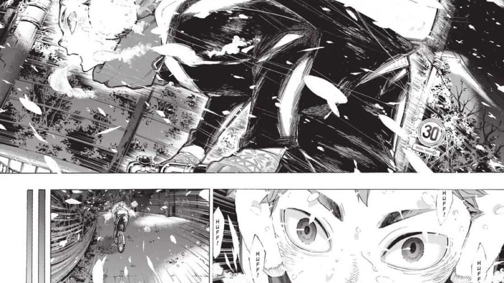
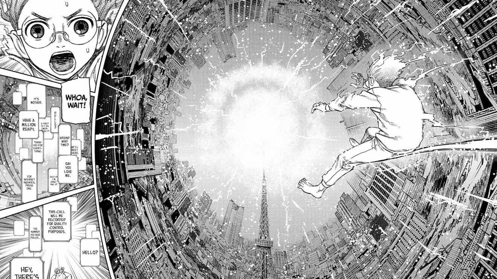
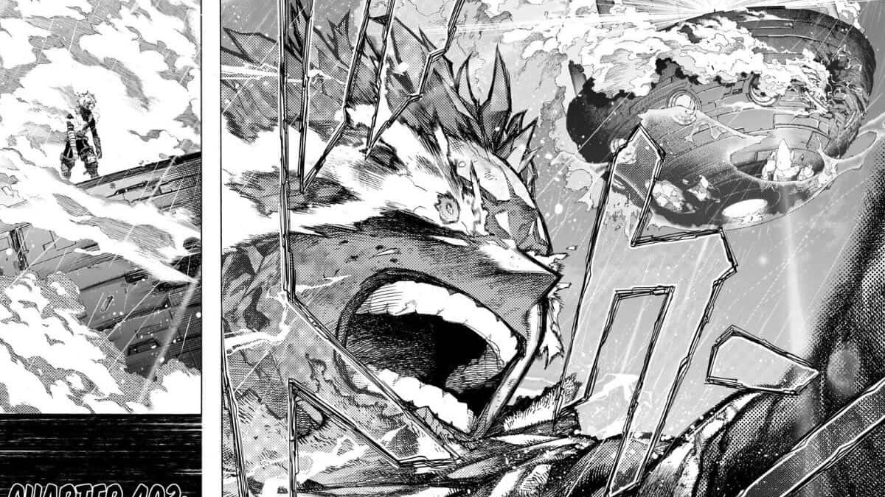

Artists
Interviews
Artwork
Techniques
Books
Prominent Manga Artists
Uzumaki — Junji Ito

Lookback — Tatsuki Fujimoto

Witch Hat Atelier — Kamome Shirahama

Planetes — Makoto Yukimura

Naruto — Masashi Kishimoto

Haikyu!! — Haruichi Furudate

Dandadan — Yukinobu Tatsu

My Hero Academia — Kohei Horikoshi